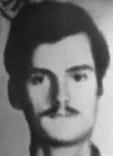

Alexander
José
Ibsen
Voerões
CIRCUNSTÂNCIAS DA MORTE
A família de Alexander conhecia o espírito inquieto do filho, mas não sabia de seu engajamento em lutas sociais e políticas, por isso foi tomada de surpresa em outubro de 1971 quando, de acordo com relato de dona Carmen, mãe de Alexander, à Comissão Especial sobre Mortos e Desaparecidos Políticos (CEMDP), um grupo de policiais fortemente armados, inclusive com metralhadoras, chegou em nossa casa buscando-o e acusando-o de subversivo. Revistaram especialmente seu quarto, levaram certos documentos, todos trabalhos escolares, inclusive sobre a Hungria, pátria do pai […] Não nos devolveram nenhum documento. Por essa época, Alexander já estava envolvido na luta contra a ditatura, tendo ingressado no Molipo (Movimento de Libertação Popular) e estava sendo perseguido. Alexander Ibsen morreu no dia 27 de fevereiro de 1972. Segundo a versão divulgada pela repressão, Alexander e seu companheiro de militância, Lauriberto José Reyes teriam sido mortos em tiroteio com policiais. Nesta situação, um morador do local, Napoleão Felipe Biscaldi, também teria sido atingido pelas balas e morrido. Em nota do jornal Folha de São Paulo, de 29 de fevereiro de 1972, os militantes foram responsabilizados pelo tiro que levou Napoleão à morte. Alexander e Lauriberto foram examinados pelos legistas Isaac Abramovitch e Walter Sayeg, que confirmaram as versões sobre as mortes decorrentes de confronto armado. O laudo de Napoleão Biscaldi foi assinado por outro legista, Paulo Altenfelder. Nas requisições de exame ao Instituto Médico Legal de São Paulo (IML/SP), solicitadas pelo DOPS/SP há a letra T manuscrita, uma estratégia utilizada na época para indicar que se tratava de corpos de militante, chamados de terroristas pelos órgãos da repressão. O laudo de exame de corpo de delito de Alexander descreve dois orifícios provocados por projéteis de arma de fogo no rosto, um no pescoço, que transfixou o tórax, perfurando o pulmão, e um quarto orifício com entrada no antebraço direito. Encontrou-se igualmente orifícios no osso frontal do crânio, lacerações do parênquima encefálico, hemorragia subdural e orifício no osso occipital. No tronco, encontrou-se também hemorragia interna. Passados mais de 40 anos, investigações sobre esse episódio revelaram a existência de vários elementos que permitem apontar que a versão divulgada à época não se sustenta. Apesar de resultar em violenta ação policial, não foi realizada à época nenhuma perícia que permitisse a comprovação do suposto tiroteio. Ao examinar os documentos do caso, a CEMDP considerou as mortes dos militantes como um caso de execução. No período de investigações da CEMDP a Comissão de Familiares de Mortos e Desaparecidos Políticos (CFMD) visitou o local do crime para levantar informações sobre o caso com os moradores da região. A execução dos militantes foi vista por toda a vizinhança e nos depoimentos foram recolhidas informações de que já havia sido preparada uma emboscada para os militantes que, conforme contam, teriam tentado fugir, mas não estavam armados, nem teriam reagido. De acordo com o depoimento de Adalberto Barreiro, que na época dos fatos residia em rua paralela ao local do suposto tiroteio, havia um jovem que tentava correr, mancando e segurando a perna, quando passou um Opala branco com policiais armados de metralhadora, com metade do corpo para fora do carro, atirando. Primeiro, atingiram Napoleão Felipe Biscaldi – um funcionário público aposentado, antigo morador da Serra de Botucatu, que atravessava a rua; depois balearam o rapaz que mancava. O rapaz aparentemente foi morto na hora. Os policiais o jogaram no porta-malas do carro. As ruas estavam cercadas de policiais. Adalberto também contou que viu uma moça japonesa presa dentro do Opala e que os policiais comentavam que outro militante também tinha sido morto no outro quarteirão. Outro depoimento recolhido pelos membros da CFMD foi prestado por Maria Celeste Matos, também antiga moradora do local. Com muito medo ainda, ela narrou que naquele domingo o Esquadrão da Morte comandou a ação militar que fez um cerco em toda a extensão da rua. De acordo com ela seu filho e o de Napoleão estavam jogando bola juntos quando ocorreu o tiroteio. Ao chamar o filho para casa ela e o marido haviam visto um menino ser morto e colocado no porta-malas do carro da polícia. Imaginando que fosse o filho deles, seu marido falou com o Esquadrão da Morte e ficou perto do carro até que os policiais abriram o porta-malas e mostraram não se tratar do seu filho. Nessa ocasião, os policiais lhes teriam informado tratar-se do corpo de um “terrorista”. Segundo relato dos moradores que presenciaram o episódio, ao contrário da falsa versão divulgada à época, nenhum dos militantes chegou a sacar a arma. Em virtude de determinação policial, Alexander foi enterrado pela família em 1 o de março de 1972 em caixão lacrado, no Cemitério da Saudade, Em São Paulo. Seu velório e sepultamento foram acompanhados por mais de cinquenta pessoas, inclusive por agentes do DOPS/SP.
Alexander's family was aware of their son's restless spirit, but they were unaware of his involvement in social and political struggles, which is why they were taken by surprise in October 1971 when, according to a report by Dona Carmen, Alexander's mother, to the Special Commission on Political Deaths and Disappearances (CEMDP), a group of heavily armed police officers, including with machine guns, arrived at our house looking for him and accusing him of being a subversive. They specially searched his room, took certain documents, all schoolwork, including about Hungary, his father's homeland [...] They didn't return any documents to us. By that time, Alexander was already involved in the fight against the dictatorship, having joined the Molipo (Popular Liberation Movement) and was being persecuted. Alexander Ibsen died on February 27, 1972. According to the version released by the repression, Alexander and his fellow activist, Lauriberto José Reyes, were killed in a shootout with police officers. In this situation, a local resident, Napoleão Felipe Biscaldi, would also have been hit by the bullets and died. In a note from the newspaper Folha de São Paulo, dated February 29, 1972, the militants were blamed for the shot that led to Napoleon's death. Alexander and Lauriberto were examined by coroners Isaac Abramovitch and Walter Sayeg, who confirmed the versions of the deaths resulting from armed confrontation. Napoleão Biscaldi's report was signed by another coroner, Paulo Altenfelder. In the examination requests to the Legal Medical Institute of São Paulo (IML/SP), requested by the DOPS/SP, there is the handwritten letter T, a strategy used at the time to indicate that they were the bodies of militants, called terrorists by the repression bodies. Alexander's criminal examination report describes two holes caused by firearm projectiles in the face, one in the neck, which transfixed the chest, puncturing the lung, and a fourth hole that entered the right forearm. Holes were also found in the frontal bone of the skull, lacerations in the brain parenchyma, subdural hemorrhage and a hole in the occipital bone. Internal bleeding was also found in the torso. More than 40 years later, investigations into this episode revealed the existence of several elements that allow us to point out that the version released at the time is not sustainable. Despite resulting in violent police action, no investigation was carried out at the time to prove the alleged shooting. When examining the case documents, CEMDP considered the militants' deaths as a case of execution. During the CEMDP investigation period, the Commission for Relatives of Political Dead and Missing Persons (CFMD) visited the scene of the crime to gather information about the case from residents of the region. The execution of the militants was seen throughout the neighborhood and in the testimonies information was gathered that an ambush had already been prepared for the militants who, as they say, had tried to flee, but were not armed, nor would they have reacted. According to the testimony of Adalberto Barreiro, who at the time of the events lived on a street parallel to the location of the alleged shooting, there was a young man who was trying to run, limping and holding his leg, when a white Opala passed by with police officers armed with machine guns, with half their body outside the car, shooting. First, they hit Napoleão Felipe Biscaldi – a retired civil servant, former resident of Serra de Botucatu, who was crossing the street; then they shot the boy who was limping. The boy was apparently killed instantly. The police threw him into the trunk of the car. The streets were surrounded by police. Adalberto also said that he saw a Japanese girl trapped inside Opala and that the police commented that another militant had also been killed on the other block. Another statement collected by CFMD members was given by Maria Celeste Matos, also a former resident of the place. Still very scared, she said that that Sunday the Death Squad led the military action that laid siege to the entire length of the street. According to her, her son and Napoleon's son were playing ball together when the shooting occurred. When calling her son home, she and her husband had seen a boy killed and placed in the trunk of the police car. Imagining that it was their son, her husband spoke to the Death Squad and stayed near the car until the police opened the trunk and revealed that it was not their son. On that occasion, the police reportedly informed them that it was the body of a “terrorist”. According to reports from residents who witnessed the episode, contrary to the false version published at the time, none of the militants actually drew their weapons. Due to police orders, Alexander was buried by his family on March 1, 1972 in a sealed coffin, at the Saudade Cemetery, in São Paulo. His wake and burial were attended by more than fifty people, including DOPS/SP agents.
La familia de Alexander era consciente del espíritu inquieto de su hijo, pero desconocía su implicación en las luchas sociales y políticas, por lo que fueron tomados por sorpresa en octubre de 1971 cuando, según informe de doña Carmen, madre de Alexander, a la Comisión Especial sobre Muertes y Desapariciones Políticas (CEMDP), un grupo de policías fuertemente armados, incluso con ametralladoras, llegaron a nuestra casa buscándolo y acusándolo de subversivo. Registraron especialmente su habitación, se llevaron ciertos documentos, todos los deberes escolares, incluso sobre Hungría, la patria de su padre [...] No nos devolvieron ningún documento. En ese momento, Alejandro ya estaba involucrado en la lucha contra la dictadura, se había unido al Molipo (Movimiento Popular de Liberación) y estaba siendo perseguido. Alexander Ibsen murió el 27 de febrero de 1972. Según la versión difundida por la represión, Alexander y su compañero activista, Lauriberto José Reyes, murieron en un tiroteo con agentes policiales. En esta situación, un vecino de la zona, Napoleão Felipe Biscaldi, también habría sido alcanzado por los balazos y habría muerto. En una nota del diario Folha de São Paulo, del 29 de febrero de 1972, se culpaba a los militantes del disparo que provocó la muerte de Napoleón. Alexander y Lauriberto fueron examinados por los forenses Isaac Abramovitch y Walter Sayeg, quienes confirmaron las versiones de las muertes producto del enfrentamiento armado. El informe de Napoleão Biscaldi fue firmado por otro forense, Paulo Altenfelder. En los pedidos de examen al Instituto Médico Legal de São Paulo (IML/SP), solicitados por el DOPS/SP, está la letra T manuscrita, estrategia utilizada en la época para indicar que se trataba de cadáveres de militantes, llamados terroristas por los órganos de represión. El informe del examen criminal de Alexander describe dos agujeros causados por proyectiles de arma de fuego en el rostro, uno en el cuello, que atravesó el tórax, perforando el pulmón, y un cuarto agujero que ingresó en el antebrazo derecho. También se encontraron agujeros en el hueso frontal del cráneo, laceraciones en el parénquima cerebral, hemorragia subdural y un agujero en el hueso occipital. También se encontró hemorragia interna en el torso. Más de 40 años después, las investigaciones sobre este episodio revelaron la existencia de varios elementos que permiten señalar que la versión difundida en su momento no es sustentable. A pesar de que resultó en una acción policial violenta, en ese momento no se llevó a cabo ninguna investigación para probar el presunto tiroteo. Al examinar los documentos del caso, el CEMDP consideró la muerte de los militantes como un caso de ejecución. Durante el período de investigación del CEMDP, la Comisión de Familiares de Muertos y Desaparecidos Políticos (CFMD) visitó el lugar del crimen para recabar información sobre el caso de vecinos de la región. La ejecución de los militantes se vio por todo el barrio y en los testimonios se recogió información de que ya se había preparado una emboscada para los militantes que, según dicen, habían intentado huir, pero no estaban armados ni hubieran reaccionado. Según el testimonio de Adalberto Barreiro, quien al momento de los hechos vivía en una calle paralela al lugar del presunto tiroteo, había un joven que intentaba correr cojeando y sujetándose la pierna, cuando pasó un Opala blanco con policías armados con ametralladoras, con la mitad del cuerpo afuera del auto, disparando. Primero, golpearon a Napoleão Felipe Biscaldi, funcionario jubilado, ex residente de la Sierra de Botucatu, que cruzaba la calle; Luego le dispararon al niño que cojeaba. Al parecer el niño murió instantáneamente. La policía lo metió en el maletero del coche. Las calles estaban rodeadas de policías. Adalberto también dijo que vio a una niña japonesa atrapada dentro de Opala y que la policía comentó que en la otra cuadra también habían asesinado a otro militante. Otra declaración recogida por integrantes del CFMD fue dada por María Celeste Matos, también ex habitante del lugar. Aún muy asustada, contó que ese domingo el Escuadrón de la Muerte encabezó la acción militar que sitió toda la calle. Según ella, su hijo y el hijo de Napoleón estaban jugando a la pelota juntos cuando se produjo el tiroteo. Cuando llamaron a su hijo a casa, ella y su marido vieron cómo mataban a un niño y lo metían en el maletero del coche de policía. Imaginando que era su hijo, su marido habló con el Escuadrón de la Muerte y permaneció cerca del coche hasta que la policía abrió el maletero y reveló que no era su hijo. En esa ocasión, la policía supuestamente les informó que se trataba del cuerpo de un “terrorista”. Según informes de los vecinos que presenciaron el episodio, contrariamente a la versión falsa publicada en ese momento, ninguno de los militantes sacó sus armas. Por órdenes policiales, Alexander fue enterrado por su familia el 1 de marzo de 1972 en un ataúd sellado, en el cementerio de Saudade, en São Paulo. A su velorio y entierro asistieron más de cincuenta personas, incluidos agentes del DOPS/SP.